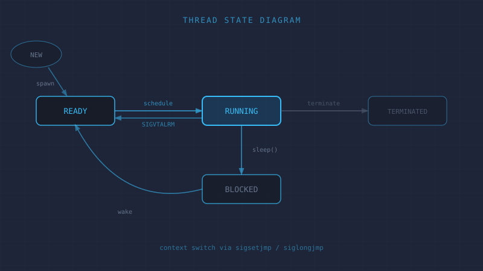

User-Level Threads Library
Threading library built entirely from scratch in C++ — no OS thread primitives.
Implements a round-robin scheduler with signal-driven preemption via
SIGVTALRM and manual context
switching via sigsetjmp/siglongjmp.
C++
POSIX Signals
sigsetjmp
Round-robin
View on GitHub
→